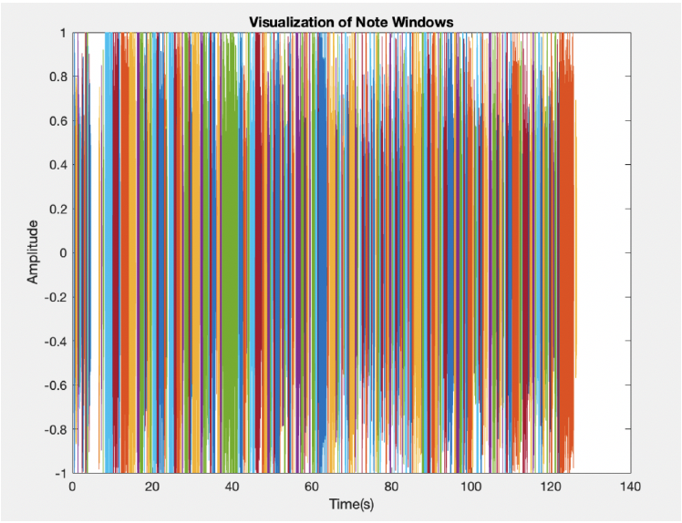
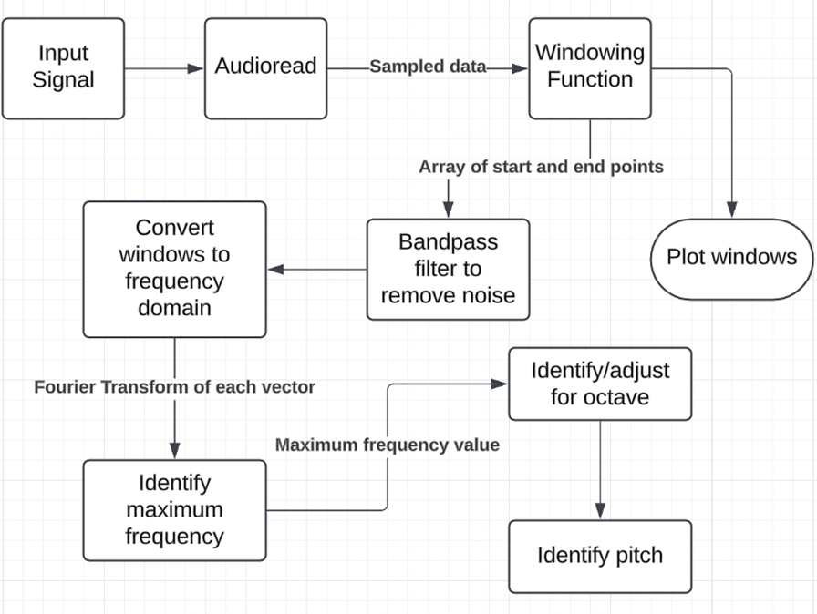
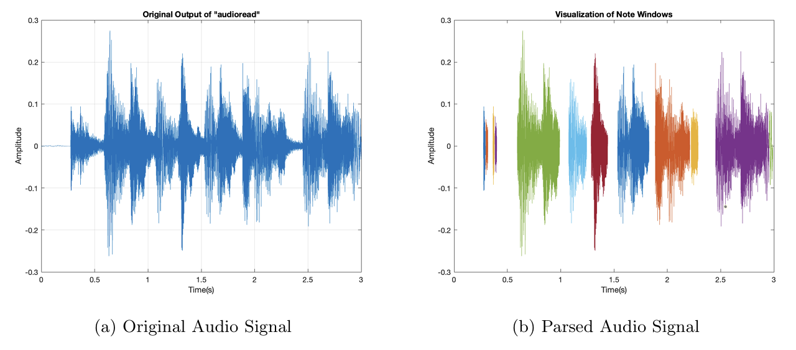
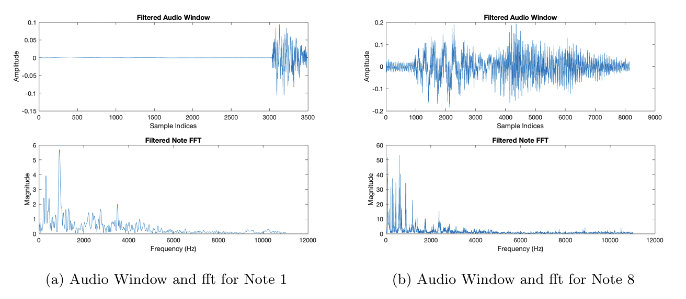
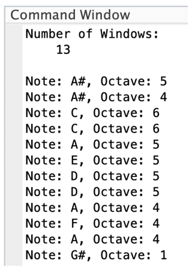

Signal Processing · Algorithm Development
Audio Note Recognition System
A MATLAB system to identify and label individual notes in an input audio file.

Abstract
In this project, I intended to design a system to identify individual music notes in a larger audio file. My system parses an input audio file into individual notes and then analyzes the frequency content of those notes to identify the dominant frequency. This dominant frequency is then used to identify the pitch and octave of the note and return those values for each note. I tested this system on audio files of varying types and lengths, with varying success. With smaller audio inputs, this system correctly identified the pitch and octave of every note window.
To identify the music notes corresponding to each frequency in a larger audio file, I created a MATLAB program to: read a file, parse the file into individual notes, convert those notes to the frequency domain, and use the dominant frequency to identify a corresponding music note. Throughout the program, I added graphing functions to troubleshoot individual functions and better visualize the audio recognition process. This code uses the audioread command to get an array of samples at a standard sample rate, then uses these samples in the following process:
- Graph original audio file using the MATLAB plot function.
- Parse file into individual notes: A pointer is used to iterate through the length of the audio file, flagging sections that are above an upper threshold as a note and below a lower threshold as a gap between notes. These thresholds are based on a percentage of the maximum amplitude and arbitrarily decided depending on the modal amplitude and tempo of the song. The values of the flagged sections are then linked to identify midpoints with which to divide the audio file, creating distinct notes.
- Graph windowed audio file for comparison to original.
- Get frequency content for each windowed section: A pointer is used to iterate through every window created in the second step. Using the MATLAB fft function, the discrete Fourier transform is calculated for the window at the pointer allowing the window's frequency content to be displayed and analyzed. In this same function, the maximum frequency is identified and its corresponding index on the frequency axis is stored with a narrow range on either side as allowed by a band-pass filter. The frequency content of the window is then displayed in a subplot with the original audio file to evaluate the function's performance and draw comparisons between each note's time and frequency representations.
- Filter out inaudible frequencies with another band-pass filter.
- Identify the octave of each note window. Here, a recursive function checks if the input frequency is between 261.63 Hz and 523.25 Hz; the bounds for the middle C octave. If the input frequency is outside these bounds, the function is recursively called on a scaled version of the frequency with a flag tracking the amount of recursions. This flag corresponds to the number of octaves below or above the middle C octave depending on the direction of the frequency scaling.
- Assign note value: using a table of note frequencies and corresponding letters and octaves, a series of ”if” statements is used to identify which note an octave-adjusted frequency corresponds to.
- Using a wrapper function, the note value and octave of each window are displayed in the command window.
A basic overview of the process is outlined in the block diagram below:

Results
For the majority of the dubugging and testing of my audio recognition system I used a three second clip of the Star Wars Cantina Song republished by the University of Illinois. The original graph of this audio file is shown below left. In this figure, the amplitude of the notes in the audio file are plotted against time on the x axis, making it easy to visualize individual notes. This file was then parsed using the previously described parsing function. With an upper threshold at 25% and a lower threshold at 15% of the maximum amplitude, the signal is separated into distinct notes, illustrated on the right side of figure 2 below.

For this file, my program identified 13 separate windows: twelve distinct notes and an empty edge case window at the end of the loop. With these windows, I was able to use the MATLAB fft function to calculate the frequency content of each window. When subplotted with the original audio window, figures similar to those below were generated for every note.

After storing each window's frequency content, the program identified the dominant frequency (largest magnitude) for each window and recorded it. Following another band pass filter to remove inaudible noise, the findOctave and findNote functions labeled the octave and note of each window based on established frequency ranges. The final output of the program for this three second clip was twelve labeled notes as shown below.

As demonstrated in the figure, the audio recognition system correctly identified the pitch and octave for each audio window's most dominant frequency. These results match very closely to sheet music for the same song, with variations often occurring for notes with many conflicting instruments or significant background noise. While these results demonstrate this program is highly effective with short audio samples, they also highlight potential shortcomings of the program when handling larger files.
Working with larger files
While the process and procedure of this note recognition program works well for smaller audio files, there are substantial MATLAB and memory issues precluding it from being as effective with larger data sets. With properly identified parsing thresholds, larger audio files necessitate creating significantly more note windows. The figure below illustrates the result of the note parsing function for ”Jingle Bell Rock,” which is just shy of three minutes long. This file requires over 200 note windows, and unsurprisingly leads to indexing and memory issues particularly with the recursive parts of the program.
With better edge case handling for recursive indexing and higher data allotment, the process outlined in this program could be adapted to better suit larger files, albeit with a proportional increase in required memory. Moreover, finer tuning of the parsing thresholds for larger files would lead to proportionally more efficient program performance by normalizing the data dimensions used in the program. Without these adaptations, the program would require excessive memory and communicate several errors when working with large files.
Conclusion
Using MATLAB's built in fast Fourier transform function for discrete signals in conjunction with a note parsing function, my program was able to very effectively identify individual music notes in a small audio file. Despite initially appearing like a straightforward process, this project was complicated by complex, changing data types and structures resulting from the Fourier transform and repeated loop operations. The most difficult parts of working through this project came from troubleshooting algorithmic issues with frequency conversions and working with arrays and vectors to store note windows at various stages of processing. For example, much of the debugging stage of the project was dedicating to fixing array index errors resulting from Hz to index conversion immediately after the FFT process, and subsequent edge case issues raised by looping.
If given more time on the project, I would make improvements to the data storage and iteration techniques used throughout the program by adding additional helper methods to clean up the file. If I were to redo the project, I would reevaluate my strategy for identifying note parsing threshold values. By incorporating an embedded function to evaluate the extent to which the maximum amplitude of the input file deviates as an outlier and evaluating thresholds accordingly I could ensure that the note windows are better correlated to notes in the input file. These changes would also aid the program to better handle larger data sets and reduce overall runtime.